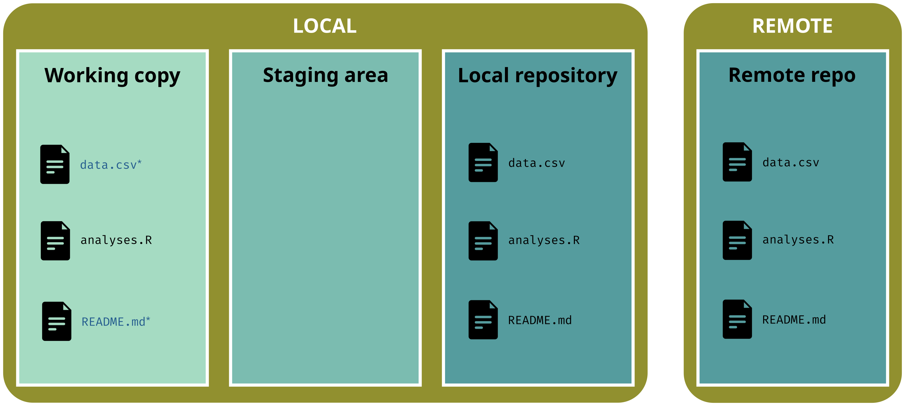
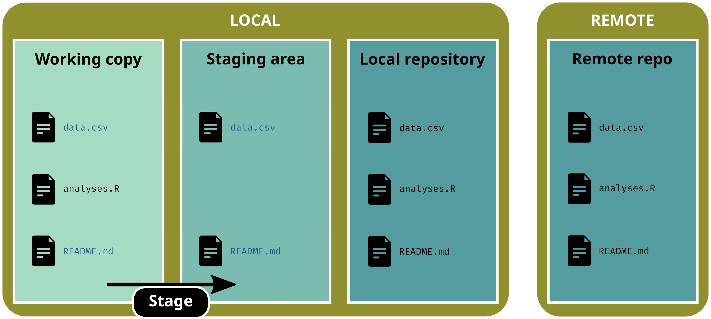
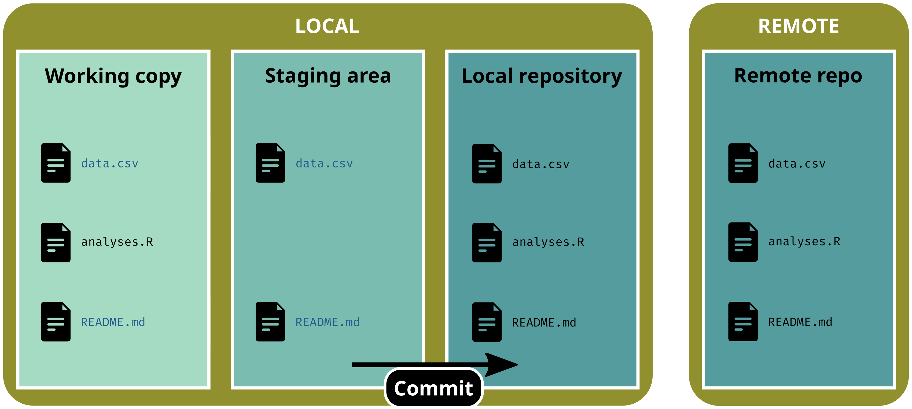

Reproducibility is about results that can be obtained by someone else (or you in the future) given the same data and the same code. This is a technical problem.
We talk about Computational reproducibility
Reproducibility spectrum
Source: Peng (2011)[^peng]
Each degree of reproducibility requires additional skills and time. While some of those skills (e.g. literal programming, version control, setting up environments) pay off in the long run, they can require a high up-front investment.
Concepts
According to Wilson et al. (2017)1, good practices for a better reproducibility can be organized into the following six topics:
Data management
Project organization
Tracking changes
Collaboration
Manuscript
Code & Software
Version control
Motivations
Project content (without git)
Questions
Which version of analyses.R is the final one?
What about data.csv?
What are the differences between versions?
Who have contributed to these versions? When?
We need a tool that deals with versions for us
Motivations
Project content (without git)
Project content (with git)
Presentation of git
git is a Version Control System (VCS).
Presentation of git
git is a Version Control System (VCS). With git you can:
keep your working copy clean
make contributions transparent (what | who | when | why)
Each snapshot can contain changes for one or many file(s)
User chooses which files to ‘save’ in a snapshot and when (!= file hosting services like Dropbox, Google Drive, etc.)
In the git universe, a snapshot is a version, i.e. the state of the whole project at a specific point in time
A snapshot is a two-step process:
Stage files: select which files to add to the version
Commit changes: save the version and add metadata (commit message)
Basic workflow
Initialize git in a (empty) folder (repository)
git init
The three areas of a gitrepository:
working copy: current state of the directory (what you actually see)
staging area: selected files that will be added to the next version
repository: area w/ all the versions (the .git/ subdirectory)
Basic workflow
Add new files in the repository
git status# On branch main# # No commits yet# # Untracked files:# README.md# analyses.R# data.csv# # Nothing added to commit but untracked files present# Use "git add <file>..." to track
Basic workflow
Stage (select) one file
git add data.csv
git status# On branch main# # No commits yet# # Changes to be committed:# (use "git rm --cached <file>..." to unstage)# new file: data.csv# # Untracked files:# (use "git add <file>..." to track)# README.md# analyses.R
Basic workflow
Stage (select) several files
git add data.csv analyses.R
git status# On branch main# # No commits yet# # Changes to be committed:# (use "git rm --cached <file>..." to unstage)# new file: analyses.R# new file: data.csv# # Untracked files:# (use "git add <file>..." to track)# README.md
Basic workflow
Stage (select) all files
git add .
git status# On branch main# # No commits yet# # Changes to be committed:# (use "git rm --cached <file>..." to unstage)# new file: analyses.R# new file: data.csv# new file: README.md
Basic workflow
Commit changes to create a new version
git commit -m"a good commit message"
Basic workflow
Now we are up-to-date
git status# On branch main# nothing to commit, working tree clean
Commits
When committing a new version (w/ git commit), the following information must be added:
WHO - the person who has made the changes (automatically added by git)
WHEN - the date of the commit (automatically added by git)
WHAT - the files that have been modified (selected by the user w/ git add)
WHY - the reason of the commit, i.e. what has been done compared to the previous version (added by the user w/ git commit)
A commit message has a title line, and an optional body
You have modified a file but have not staged changes and you want to restore the previous version
git status# On branch main# Changes not staged for commit:# (use "git add <file>..." to stage changes)# (use "git restore <file>..." to discard changes)# modified: data.csv## No changes added to commit
Undoing things
1. Undo recent, uncommitted and unstaged changes
You have modified a file but have not staged changes and you want to restore the previous version
# Restore one file (discard unstaged changes)git restore data.csv
git status# On branch main# Nothing to commit, working tree clean
Undoing things
1. Undo recent, uncommitted and unstaged changes
You have modified a file but have not staged changes and you want to restore the previous version
# Restore one file (discard unstaged changes)git restore data.csv
git status# On branch main# Nothing to commit, working tree clean
To discard all changes:
# Cancel all non-staged changesgit restore .
Undoing things
2. Unstaged uncommitted files
You have modified and staged file(s) but have not committed changes yet and you want to unstage file(s) and restore the previous version
git status# On branch main# Changes to be committed:# (use "git restore --staged <file>..." to unstage)# modified: data.csv
Undoing things
2. Unstaged uncommitted files
You have modified and staged file(s) but have not committed changes yet and you want to unstage file(s) and restore the previous version
# Unstage one filegit restore --staged data.csv
git status# On branch main# Changes not staged for commit:# (use "git add <file>..." to stage changes)# (use "git restore <file>..." to discard changes)# modified: data.csv## No changes added to commit
Undoing things
2. Unstaged uncommitted files
You have modified and staged file(s) but have not committed changes yet and you want to unstage file(s) and restore the previous version
# Unstage one filegit restore --staged data.csv
git status# On branch main# Changes not staged for commit:# (use "git add <file>..." to stage changes)# (use "git restore <file>..." to discard changes)# modified: data.csv## No changes added to commit
git status# On branch main# Your branch is up to date with 'origin/main'## Untracked files:# README.md# # Nothing added to commit but untracked files present# Use "git add <file>..." to track
Working w/ GitHub
Stage changes
git add .
git status# On branch main# Your branch is up to date with 'origin/main'## Changes to be committed:# (use "git restore --staged <file>..." to unstage)# new file: README.md
Working w/ GitHub
Commit changes
git commit -m"add README"
git status# On branch main# Your branch is ahead of 'origin/main' by 1 commit.# (use "git push" to publish your local commits)# # nothing to commit, working tree clean
Working w/ GitHub
Push changes to remote
git push# Sometimes, you'll need to use:git push -u origin main
git status# On branch main# Your branch is up to date with 'origin/main'.# # nothing to commit, working tree clean
Working w/ GitHub
Pull changes from remote
Working w/ GitHub
Pull changes from remote
git pull
git status# On branch main# Your branch is up to date with 'origin/main'.# # nothing to commit, working tree clean
Working w/ GitHub
Make local changes

git status# On branch main# Your branch is up to date with 'origin/main'.# # Changes not staged for commit:# (use "git add <file>..." to update what will be committed)# (use "git restore <file>..." to discard changes in working directory)# modified: data.csv# modified: README.md
Working w/ GitHub
Stage changes

git add .
git status# On branch main# Your branch is up to date with 'origin/main'## Changes to be committed:# (use "git restore --staged <file>..." to unstage)# modified: data.csv# modified: README.md
Working w/ GitHub
Commit changes

git commit -m"update dataset and README"
git status# On branch main# Your branch is ahead of 'origin/main' by 1 commit.# (use "git push" to publish your local commits)# # nothing to commit, working tree clean
Working w/ GitHub
Don’t forget to Push changes to remote
git push
git status# On branch main# Your branch is up to date with 'origin/main'.# # nothing to commit, working tree clean
Help me, I can’t push!
When you try to push, you might see this following error message:
git push# To github.com:ahasverus/projectname.git# ! [rejected] main -> main (fetch first)## error: failed to push some refs to 'github.com:ahasverus/projectname.git'## hint: Updates were rejected because the remote contains work that you do# hint: not have locally. This is usually caused by another repository pushing# hint: to the same ref. You may want to first integrate the remote changes# hint: (e.g., 'git pull ...') before pushing again.# hint: See the 'Note about fast-forwards' in 'git push --help' for details.
Just git pull and try to git push again
Help me, I can’t pull!
When you try to pull, you might see this following error message:
git pull# [...]# Auto-merging README.md# CONFLICT (content): Merge conflict in README.md## error: could not apply b8302e6... edit README## hint: Resolve all conflicts manually, mark them as resolved with# hint: "git add/rm <conflicted_files>", then run "git rebase --continue".# hint: You can instead skip this commit: run "git rebase --skip".# hint: To abort and get back to the state before "git rebase", # hint: run "git rebase --abort".
Welcome to the wonderful world of gitconflicts
A git conflict appears when two versions cannot be merged by git because changes have been made to the same lines.
You have to decide which version you want to keep.
The .gitignore
We can also tell git to ignore specific files: it’s the purpose of the .gitignore file
Which files? For instance:
passwords, tokens and other secrets
temporary files
large files
The syntax is simple:
# Ignore a specific fileREADME.html# Ignore all PDF*.pdf# Ignore a folderdata/# Ignore a subfolderdata/raw-data/# Ignore a specific file in a subfolderdata/raw-data/raw-data.csv